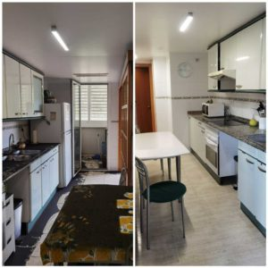

Si usted y su familia han sido víctimas de un incendio en una casa, es imperativo comenzar las actividades de Limpieza de Incendios lo antes posible, para recuperar su sentido de seguridad y protección. Aquí hay 10 consejos sobre qué hacer después de un incendio:

1) Llame a su compañía de seguros e infórmeles del incendio. Es probable que envíen a un perito para que examine el daño y lo guíe a través del proceso de presentación de una reclamación.
2) Llame a una empresa de limpieza de incendios. Su agente de seguros debería poder recomendarle a alguien de buena reputación. Una empresa de limpieza de incendios puede limpiar profesionalmente su hogar, incluidos los muebles, las paredes, el techo, los conductos, etc. Ellos tienen el conocimiento y la experiencia para saber qué proceso funcionará con cada artículo dañado. No importa lo hábil que pueda pensar que es, la auto limpieza puede empeorar las cosas.
3) Ubique todos los documentos importantes y guárdelos en un lugar seguro. Ubique los papeles del seguro, certificados de nacimiento, información médica, etc. Guárdelos en un lugar seguro de su hogar, donde pueda acceder a ellos fácilmente.
4) Haga un inventario de lo que se ha dañado y lo que no. Puede haber diversos grados de daño: humo, fuego y agua. Haga una lista de lo que se ha dañado; su compañía de seguros lo necesitará. Si puede, busque los recibos de cada artículo.
5) Cambie el filtro de su horno al menos una vez al día durante las primeras semanas, hasta que el hollín visible desaparezca de los filtros.
6) Abra sus ventanas. Esto ayudará a eliminar los olores de humo y fuego y ventilará su hogar. También ayudará a secar las cosas.
7) Cubra todos los muebles no dañados con una cubierta de plástico; o considere trasladarlos a un lugar de almacenamiento hasta que su casa esté completamente restaurada.
8) Lave su ropa con su lavadora habitual. Por lo general, esto es todo lo que se necesita con la ropa que no requiere limpieza en seco para su cuidado regular. Considere colgarlos afuera en lugar de usar su secadora.
9) Seque sus alfombras con ventiladores y deshumidificadores. Si puede, colóquelos afuera y déjelos secar al sol. Cuanto más tiempo permanezcan mojadas las alfombras, mayor será la posibilidad de que se forme moho.
10) Deseche todos los alimentos y bebidas que hayan estado expuestos al fuego, al humo o al agua. Ya no son seguros para el consumo, incluidos los alimentos enlatados. No vuelva a congelar ningún alimento que se haya descongelado.
Una empresa de limpieza de incendios puede ayudar a facilitar el proceso al guiarlo en cada paso del camino y utilizar su experiencia para limpiar su hogar de los daños causados por el humo, el fuego y el agua. Cuente con ellos para que su hogar vuelva a la normalidad.
Servicio de limpieza de daños por incendio para cada estado
Servicios asequibles en su área: línea directa 24 horas al día, 7 días a la semana. limpieza de daños por agua y daños por incendio, limpieza de aguas residuales e inundaciones. Cuando experimente daños por fuego o humo en su hogar o negocio, llame a los expertos en limpieza y limpieza en limpieza de daños por fuego y humo. Encuentre el mejor servicio de limpieza de daños por incendio
La Empresa de Limpieza de Incendios Nano Nex es el referente en España en la Limpieza de Incendios y Siniestros, líderes en el sector desde hace 20 años, por experiencia.
La limpieza del incendio consiste en recuperar todas sus pertenencias destruidas por el fuego, como objetos, paredes, fachadas, azulejos, muebles, etc. que hayan podido ser dañados por el humo. Nuestro servicio también consiste en retirar los objetos quemados e irrecuperables y los escombros para poder trabajar mejor. También eliminamos los olores del humo y limpiamos los daños causados por el mismo. Dependiendo del tipo de zona que vayamos a limpiar, nos desplazaremos con la maquinaria necesaria y específica.
Cuando prestamos servicios de limpieza de incendios, siempre ofrecemos la máxima calidad y aplicamos la mejor tecnología para la zona u objeto afectado, como la ionización, el chorro de arena y las bombas de aplicación.
Es importante que el tiempo entre el inicio del incendio y el comienzo de la limpieza sea lo más corto posible.
Deje que Nano Nex se encargue de la limpieza completa de la zona dañada por el incendio. Con la limpieza de incendios que ofrecemos, puede estar seguro de que todo vuelve a su estado anterior, ¡haremos todo lo posible!